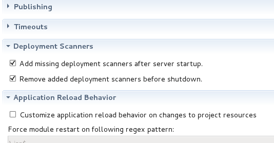

< OpenShift Tools Forge Tools >
Deployment Scanners |
|
|
More control over automatic management of deployment scanners |
In past releases, whenever an application server is started, JBoss Tools automatically adds relevant deployment scanners to your server, so that deployments to custom locations will be picked up by the server without any problems. Depending on your application server version, these scanners may be persisted across future restarts, or may not be. On servers where they are persisted, we also typically remove these scanners, to prevent multiple workspaces using the same server from having collisions or conflicting deployment locations. Some users prefer to manage their deployment scanners on their own, and wish JBoss Tools did not automatically take control of this aspect of their development environment. For these users, two new settings have been added to the server editor which will suppress this behavior.  |
Starting and Stopping Deployed Modules |
|
|
Module Start and Stop re-implemented |
Modules may be published to a server, but may also be stopped at the same time. You can see this behavior in your Administrative Console. Functionally, the difference between an undeploy and a stop is simply that during a stop, the module will remain in the server's deployment folder, but the server is instructed to undeploy it. These changes align the behavior of JBoss Tools with that of the Administrative Console, and will help to remove confusion over what the actions are actually doing. |